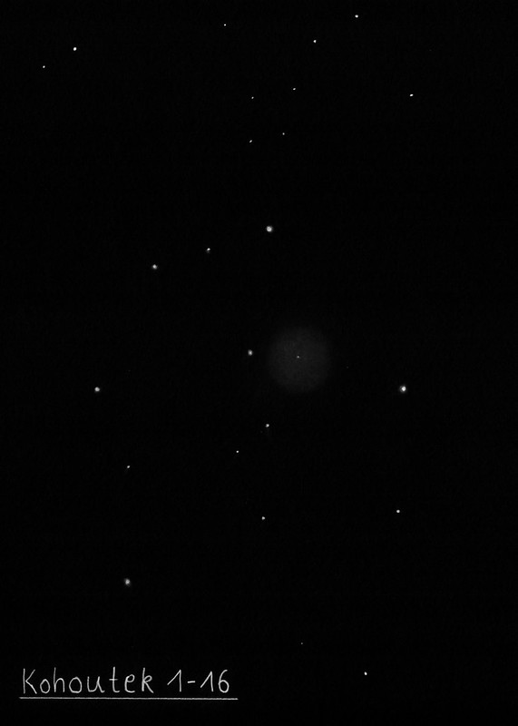

Dissecting the Veil Nebula
In a rather long OOTW I'm posting my observations of various sections of the Veil beyond the main western and eastern arcs. If you make it to the bottom of the page, I've included a photographic finder chart labels the various wisps and patches. Of course, dividing up the Veil is somewhat arbitrary as various threads merge into knots into other filaments, etc. But I've followed Alan Whitman's letter designations used in a Sky & Tel article last September for objects A through H and added four new targets: I, J, K and L.
Before the availability of nebula filters in the late 1970's, the Veil Nebula was generally considered a challenge object in amateur telescopes. But in a dark sky, the Veil Nebula is arguably the most spectacular telescopic object in the northern sky using a narrowband or OIII filter and a modern wide-field eyepiece.
Even with my 15x50 binoculars equipped with UHC filters, the entire eastern arc (NGC 6992/6995) and portions of the western arc (NGC 6960) are easily visible and I can even faintly detect the main section of Pickering's Triangular Wisp. In my 18-inch Starmaster, most of the nebulosity visible on photographs can be seen, especially using a good finder chart. The two main western and eastern arcs reveal too much filamentary structure to possibly describe in detail, but my favorite region is certainly the feathery side branches that extend west on the southern end of NGC 6992/6995. In good conditions, the filaments appear like intertwined threads or twisted ropes giving a striking 3-dimensional appearance.
NGC 6974
20 51 04 +31 49.7
Size 4'x2.5'
Although the NGC position (from the 4th Earl of Rosse) is 74' further south in an empty section of the Veil, this number is generally applied to the SE end of the 25' section of nebulosity between the north end of Pickering's Triangular Wisp and the north end of NGC 6992/5 (eastern section of the Veil). This patch is roughly 4'x2.5' in size and contains three brighter stars. A thread of nebulosity extends NW and then spreads out at the NW end (see N6979). Extremely faint haze extends at least 20' SE towards a slightly brighter patch (see notes on section G).
NGC 6979
20 50 28 +32 01.6
Size 5'x3'
This number is generally applied to the NW end of a fairly faint 20'x4' section of the Veil, located the NE of the northern end of Pickering's Triangular Wisp. The NW end is roughly 5'x3' and involves a few stars including a couple on the SW side and a couple on the north side. An isolated filament (section "F") oriented NNW-SSE is situated 10' ENE of N6979. To the south of N6979 the nebulosity thins and a faint thread extends to the SE before spreading out again on the SE end (see N6974), about 15' from N6979.
Pickering's Triangular Wisp = Simeis 3-188
20 48 32 +31 31 38
Size 45'x30'
Using 108x and an OIII filter, the main triangular wedge extends nearly 50' and displays a remarkable amount of filamentary structure with a number of long, thin, high surface brightness wisps extending in a number of different directions. Some filaments merge and others appear to crisscross. The northern end displays a prominent filamentary structure but spreads out east-west 20'-25'. Several of the bright, sharp filaments are on the eastern border towards the north and on the western border further south. As Pickering's Triangular Wisp continues south it tapers down to ~2' after 50' (nearly the full 56' field of the 21mm Ethos). At the southern end the narrow stream of nebulosity bends slightly towards the east, then significantly dims but still continues as a faint, extremely thin filament heading due south. With careful viewing this thread (width of ~20") can be easily traced, passing directly between mag 7.2 HD 198330 and mag 7.9 HD 198482 and continuing south to about +30.5° declination for a total length of at least 90'. Further south the nebulosity breaks up into dim, ill-defined pieces and nearly merges with section "I" on its west side at +30.3° declination, giving a total length of ~1.75°.
Veil Nebula (A) = Simeis 3-210
20 53 07 +29 39.0
Simeis 3-210 is a long, thin filament at the extreme southern end of the Veil Nebula and is virtually unknown (not listed separately in SIMBAD), although it is outlined on the U2000 and Millennium star atlases. Although much fainter than the other main sections of the Veil, Simeis 3-210 was easily picked up at 105x using an OIII filter as it passes through mag 6.4 HD 198976. This narrow strand is extended N-S at least 20' with the northern half mainly consisting of an elongated patch (~3'x1'), centered about 6' NNE of the bright star. The southern section is a very dim filament beginning at the mag 6.4 star though it brightens somewhat ~10' SSW of the star. There also appears to be some streaky, detached nebulosity just west of a mag 7.7 star further south, extending the total length to 25'-30'.
Veil Nebula (B)
20 51 22 +30 10.9
An isolated patch of the Veil Nebula that appeared fairly faint but was easily picked up as a roughly circular or oval glow at 108x using an OIII filter. A star is attached with perhaps a fainter companion.
Veil Nebula (C)
20 49 12 +29 52.0
Small very faint patch on the south end of the Veil Nebula with 2 or 3 stars involved. Located ~15' NE of the brighter "D" section of the Veil. On photographs this is just part of a larger piece that is in a series of partly broken up filaments and patches on the south side that trail off to the SE from the southern end of NGC 6960 (main western piece).
Veil Nebula (D)
20 48 12 +29 45.6
Size 4'
Section "D" is located 9' NE of mag 8.1 HD 198198, at the extreme southern end of N6960 (main western section), where it breaks up into several filaments and patches. At 108x and OIII filter, this interesting piece appeared irregularly shaped with a number of stars superimposed forming a 4'x2.5' ellipse. A very bright wisp, ~2.5' length, extends NE from the NW end of the ellipse. The wisp dims but additional patchy nebulosity spreads NE another 3'. Directly north of the bright filament, a faint strip of nebulosity can be traced ~16' due north (not shown on Millenium Star Atlas (MSA) or Megastar), just beyond +30° dec. A brighter filament is located ~5' W of the northern end of this faint strip.
Veil Nebula (E)
20 47 07 +31 26
Size 7'x3'
This is a relatively bright, isolated patch of the Veil Nebula roughly 20' west or SW of the main portion of Pickering's Wedge. Using 108x and an OIII filter, it appears "wishbone" shaped with a prominent wisp on the west side, overall ~7'x3' in size. I'm sure I've noticed this object in the past as it was very obvious but it is not plotted on U2000. It is plotted on MSA and Megastar.
Veil Nebula (F)
20 49 46 +32 05.4
Size 2.5'x0.5'
This filament in the Veil Nebula is detached off the NW end of NGC 6979 near the north-central tip of the entire loop. At 108x and OIII filter it was easily visible as a very elongated wisp oriented NNW-SSE, ~2.5'x0.5' in length.
Veil Nebula (G)
20 52 06 +31 23.3
Size 3'
Fairly faint isolated patch of the Veil Nebula located in the middle of the complex between Pickering's Wedge and NGC 6992 (eastern half). At 108x appears fairly faint, fairly small, oval, ~3' diameter. Section "G" is less prominent than patch "H" and is situated NW of two mag 9.5/10.4 stars and just NE a mag 11 star. You won't find it plotted on Megastar or U2000, but it is shown on MSA.
Veil Nebula (H)
20 56 18 +30 24.0
Size 2.5'
This is a small patch about 35' S of the feathery side branches at the southern end of N6992 (the main eastern section). It was easily swept up at 108x using an OIII filter as a fairly bright but fairly small patch, roughly triangular shaped and ~2'x1.2' diameter. A few faint stars are superimposed including one at the SW end. Not plotted on Megastar nor MSA but shown on the U2000 atlas.
Veil Nebula (I)
20 49 05 +30 18
Size 4'
This section of the Veil Nebula is located east of the southern forked end of NGC 6960 at the extreme southern end of Pickering's Triangular Wedge. At 108x and OIII filter this patch appears fairly bright with an irregular outline, ~3' in diameter with fainter extensions increasing the size. It is plotted as part of a western side extension at the southern end of Pickering's Wedge in MSA and U2000 and as a separate patch on Megastar.
Veil Nebula (J)
20 48 11 +30 28.8
Size 3'
This is a very dim, isolated patch of the Veil Nebula about 15' NW of section "I". At 108x and OIII filter it appears as a very faint glow encompassing a small group of stars, ~3' diameter. Would easily pass over this patch without noticing if not looking carefully. Plotted on Megastar as a separate patch and on MSA as part of a western side extension at the southern end of Pickering's Wedge that includes section "I".
Veil Nebula (K)
20 52 19 +30 55.3
Size 4'x1'
This elongated strip is located near the geometric center of the Veil Nebula! It was easily picked up at 105x using an OIII filter as a very elongated patch, ~4'x1', oriented N-S. A mag 13 star is at the north end and a mag 11.5 star is at the south end. One or two mag 13-13.5 stars are superimposed. The nebulosity appears to dim and spread out on the north end, but is quite narrow at the south end. There was a hint of additional nebulosity extending to the west.
Veil Nebula (L)
20 50 41 +31 32
Size 15'
Easily picked up at 73x using an OIII filter as a fairly large, thin streamer oriented SSE to NNW. The filament begins at a 10.5-magnitude star located at 20h 50m 51s +31° 27.2' and flows to the NNW. It passes to the west of 9th magnitude SAO 70569 and fades and possibly spreads out as the thread continues to the NW. The southern end of NGC 6974 lies in the field to the NE and the northern end of Pickering's Wisp is to the west, but this filament appears detached from both.
"GIVE IT A GO AND LET US KNOW"
GOOD LUCK AND GREAT VIEWING!

Steve's follow-up — July 10th, 2012, 04:12 PM
A good place to start for the obscure pieces is "A" (Simeis 3-210), which passes through a mag 6.4 star at the extreme southern end of the Veil complex. Kind of reminds me of a very dim version of the main western piece (NGC 6960), which passes through naked-eye 52 Cygni.
Steve's follow-up — July 11th, 2012, 04:18 PM
If anyone wants to try and chase down Reiner's objects, the patch near 20 53 50 +32 10 is visible on the image I uploaded -- just extend an imaginary line a short way beyond the upper right (NW) of the main eastern arc (NGC 6992) and it will run into this faint triangular or fan-shaped patch. The suspected streak near 20 54.9 +32 14 is the thin filament (running NW-SE) just to the upper left (NE) of the triangular patch.